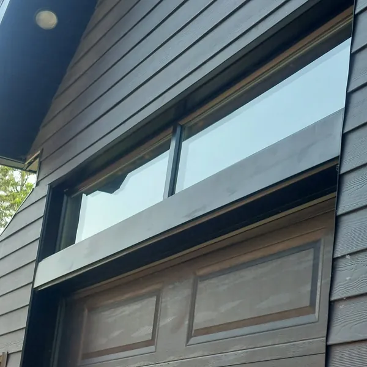

01
Pliage d'aluminium sur mesure
Chaque pièce est mesurée, pliée à la bonne dimension, puis posée pour épouser votre bâtiment.
- Soffites et fascias
- Cadrages de portes, de fenêtres et de garages
- Recouvrement de poutres et de colonnes
- Solins et moulures